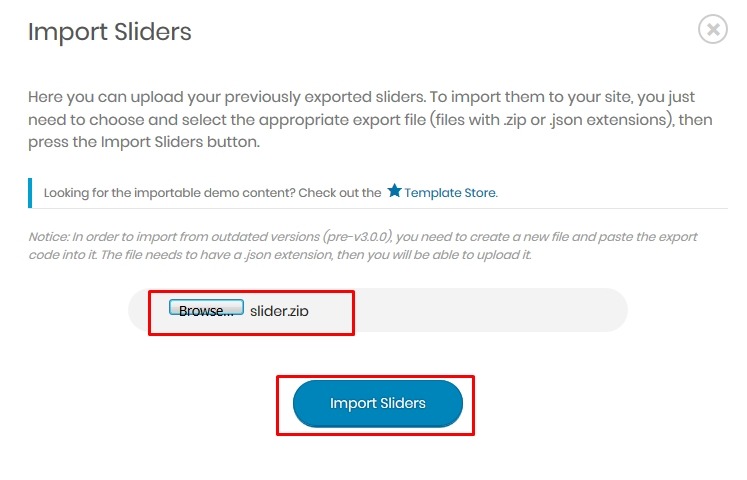
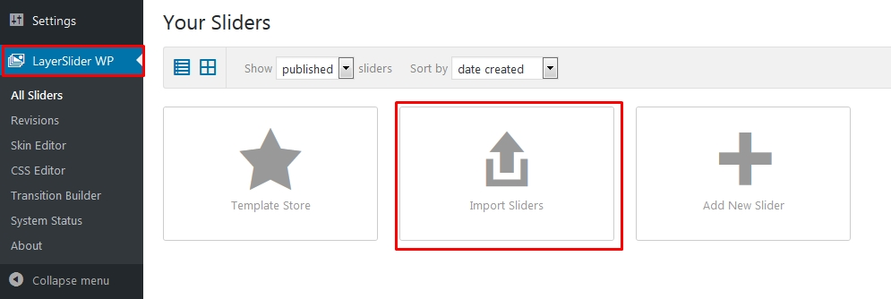

- Requirements
- Theme Installation
- Importing Demo contents
- LMS: Learning Management System
- Theme Features
- Layout Settings
- Layout Settings for Individual Post Types
- Blog Settings
- Post Settings
- Error Page Settings
- WooCommerce Settings
- Custom Post Type Settings
- Research
- Events
- Testimonial
- Gallery
- Visual Composer Elements
- Built-in CSS Classes (Advanced)
- Special Tutorials
- Troubleshooting
- Contact
Eikra WordPress Theme Documentation
1| Requirements
You need at least WordPress version 4.5+ installed for this theme to work properly. It is strongly recommended that you always use the latest stable version of Wordpress to ensure all known bugs and security issues are fixed. Other requirements:
- PHP version 5.6 or greater. But for maximum speed gain we recommend you to use PHP version 7.3+.
- MySQL version 5.6 or greater OR MariaDB version 10.0 or greater.
For more information about WordPress requirements you can check the official page from here: https://wordpress.org/about/requirements/
2| Theme Installation
When you are ready to install a theme, you must first upload the theme files and then activate the theme itself. The theme files can be uploaded in two ways:
- FTP Upload: Using your FTP client, upload the non-zipped theme folder into the /wp-content/themes/ folder on your server.
- WordPress Upload: Navigate to Appearance -> Themes -> Add New -> Upload. Go to browse, and select the zipped theme folder. Hit "Install Now" and the theme will be uploaded and installed.
Once the theme is uploaded, you need to activate it. Go to Appearance -> Themes and activate your chosen theme.
After that you need to install and activate the following pre-packaged plugins:
- Eikra Core: Required and must install plugin.
- RT Framework: Required and must install plugin.
- Redux Framework: Required and must install plugin.
- Breadcrumb NavXT: Required and must install plugin.
- RT Demo Importer: Required if you want to import demo contents. You can deactivate it after demo is imported.
- WPBakery Page Builder: Recommended. Page builder plugin.
- LearnPress - WordPress LMS Plugin: Recommended. Install if you want LMS(Learning Management System) feature.
- LearnPress - Course Review: Optional. Install if you want Courses Review feature.
- LearnPress Courses Wishlist: Optional. Install if you want Courses Wishlist feature.
- LayerSlider WP: Optional. Install if you want to use slider.
- Theme My Login: Optional. Install if you want custom registration page.
- Contact Form 7: Optional. Install if you want to use contact form.
- Meks Simple Flickr Widget: Optional. Install if you want to display Flickr images in widget.
- WP Retina 2x: Optional. Install if you want your site to be retina ready.
- WooCommerce: Optional. Install if you want ecommerce/store functionality.
- YITH WooCommerce Quick View: Optional. Install if you want quickview icon over products.
- YITH WooCommerce Wishlist: Optional. Install if you want wishlist icon over products.
N.B: All plugins must be installed and activated if you want your site to look exactly like demo.
To install these plugins, navigate to Appearance -> Install Plugins and start installation.
After installation process complete you have to activate these plugins.
3| Importing Demo contents
We are providing you two methods for importing demo contents: Automatic and Alternative. You can follow either one of these methods.
- Automatic (Recommended): This method will remove all your existing data, so use this method only in fresh website. This procedure will be faster because you just have to do one click and then everything will happen automatically. If you want an exact clone of demo website without doing any manual configuration after importing data then this method is appropiate for you.
- Alternative: Use this method only if:
- Automatic demo import method fails ( Only few of our customers like 5% have experienced this issue due to their hosting limits, in that case we also provide free demo importing service if you contact with us).
- You already have a working website with existing contents(eg. posts, pages etc).
- You don't care about other configurations(eg. various plugin settings), you just want to import posts,pages etc from the demo.
3.1| Automatic Import
Want to build your site like the demo? You can do it by only one click!
** Note: Before proceeding, please remember that when you are done with the demo import, all existing settings and contents will be removed and replaced by the demo contents. So it is highly recommended that you should only do this in fresh site. **
First please make sure that Eikra Parent Theme is activated on your site.
From Admin menu, navigate to Tools -> Demo Content Install. Or alternatively, navigate to Plugins -> RT Demo Importer -> Install Demo Contents.
In this page, Click on the Install button for installing the demo.
It will take some time for importing the demo contents.
After importing demo data, please update your permalink. To update permalink, navigate to Settings -> Permalink and then click on Save Settings button.
Here's a quick video tutorial about demo importing:
If you face any issue please check the Troubleshooting Section(20.1) from here.
3.2| Alternative Import
Here's the steps:
- First install and activate plugin One Click Demo Import. Here's the plugin link: https://wordpress.org/plugins/one-click-demo-import/
- From Admin menu, navigate to Appearance -> Import Demo Data.
- On this page, click on the "Import" button for installing any demo.
- You have to import sliders manually. To do that, navigate to LayerSlider WP from Admin menu, then click on "Import Sliders" option. In the next step when file uploading option appears, select the "slider.zip" file from sample-data directory(inside theme folder) and start importing.


After importing sliders you have to set the slider on home page manually using Page Builder.
- This theme comes with many pre-packaged plugins eg. Contact Form 7, Breadcrumb NavXT, LearnPress etc . You should also configure these plugin settings too as per your needs.
4| LMS: Learning Management System
Note: You can use this theme with or without LMS functionality. We are using plugin LearnPress to facilitate LMS features. So to acativate the LMS features in your website just install and activate the LearnPress plugin. If you don't need LMS functionality just deactivate the LearnPress plugin. Either you use LMS or not the demo pages almost look the same.
We are using plugin LearnPress here for LMS functionalities, so you can check the plugin documentations and tutorials from the plugin website.
Here's the plugin link: https://wordpress.org/plugins/learnpress/
Here's the official documentation link: http://docs.thimpress.com/learnpress
And here's the official step-by-step video tutorial:
5.1| Sitewide Colors
From Admin menu, navigate to Appearance -> Eikra Options. Then go to General tab.
Choose your preferred primary and secondary color from the color palette.
After changing the settings, Click on Save Changes button.
5.2| Logo
From Admin menu, navigate to Appearance -> Eikra Options. Then go to Header tab.
From here you can upload your main logo and light logo. Light logo will be used when "Transparent header" is enabled.
After changing the settings, Click on Save Changes button.
5.3| Favicon
Favicon is the little icon which you see at the address bar of your browser.
To set this, from Admin menu navigate to Appearance -> Customize link.
Then navigate to Site Identity

From there you can upload the "Site Icon" which will be used as favicon
For more details, here's the WordPress official instruction link for setting up favicon: https://codex.wordpress.org/Creating_a_Favicon
5.4| Preloader
From Admin menu, navigate to Appearance -> Eikra Options. Then go to General tab
Here you can find the option for enabling/disabling "Preloader" option. Also you can upload your custom preloader image. When uploading image, make sure it's a transparent GIF image.
After changing the settings, Click on Save Changes button.
5.5| Back to Top Arrow
From Admin menu, navigate to Appearance -> Eikra Options. Then go to General tab
Here you can find the option for enabling/disabling "Back to Top Arrow" option. Choose your preferred option
After changing the settings, Click on Save Changes button.
5.6| Header and Top Bar
To change the Header related settings, please go to Appearance -> Eikra Options. Then go to Header tab. Following features are available:
- There are several Header and Top Bar Layouts. You can choose your preferred layout combinations from here. You can change this settings from any individual pages too.
- You have options to enable/disable Sticky Header.
- You have options to enable/disable Top Bar and Transparent Header Globally. You can change this settings from individual pages too.
- You can change Top Bar color, background color etc.
- There are several icons which are displayed beside the navigation menu. You can enable/disable it from here.
After changing the settings, Click on Save Changes button.
5.11| Typography
You can change the typography of Body and Headers. To do this, go to Appearance -> Eikra Options. Then go to Typography tab.
After changing the Typography settings, Click on Save Changes button.
6| Layout Settings
From here you can set default layouts for pages, blog, posts etc. You can find this settings on Appearance -> Eikra Options and then Layout Defaults tab.
This settings is similar for all submenus under "Layout Defaults", so for convenience i'll just describe for one item (Single Research).
Layout: You can choose various layout types for pages eg. Left Sidebar, Right Sidebar, Full Width.
Custom Sidebar: You can choose either default sidebar or any custom sidebar. If this field is empty then default sidebar will be used.
Content Padding Top: Paddings at the top of page contents. (see image below).
Content Padding Bottom: Paddings at the bottom of page contents.(see image below).
Banner: You can enable or disable banner (see image below).
Breadcrumb: You can enable or disable breadcrumb (see image below).
Banner Background Type: You can choose weather you want a background image or background color for banner.
Banner Background Color/Image: You can select the banner background color or image from here.
7| Layout Settings for Individual Post Types
You can override the above settings for individual post types. For any post types (like Posts, Pages, Case Studies, Team, Portfolio etc), when you go to Add New or Edit page, you can find similar settings like above under the "Layout Settings" box. If you change any settings from here, this will take priority. If you choose default, settings from the Eikra Options -> Layout Defaults (described above) will be used.
8| Blog Settings
Navigate to Appearance -> Eikra Options. Then go to Blog Settings tab. From here you can change Blog/Archive related settings.
Also you can upload an alternave preview image which will be used as featured image when no fetured image exists in some layouts (For example, Blog Layout 2). To do this, go to Appearance -> Eikra Options. Then go to General tab. It'll look like this:
After changing the settings, Click on Save Changes button.
9| Post Settings
Navigate to Appearance -> Eikra Options. Then go to Post Settings tab. From here you can change settings for single post .
After changing the settings, Click on Save Changes button.
10| Error Page Settings
Navigate to Appearance -> Eikra Options. Then go to Error Page Settings tab. Settings will look like this:
This part is well explained in the image below:
After changing the settings, Click on Save Changes button.
11| WooCommerce Settings
Navigate to Appearance -> Eikra Options. Then go to WooCommerce tab. Here you'll find WooCommerce related options:
After changing the settings, Click on Save Changes button.
12| Custom Post Type Settings
We have created several custom post types eg. Research, Events etc. You can change the slug (which is used as part of url) of these custom post types easily. To do this, go to Appearance -> Eikra Options. Then go to General tab. Here you'll find these options:
Also you can set up root/archive pages for these Custom Post Types which will be used as breadcrumb. To do this, navigate to Settings -> Breadcrumb NavXT. In this page, Click on the Post Types tab.
Then select the root pages for Case Studies, Team and Portfolio like the image below. It'll be used as archive page.
13| Research
You can add Research from Research menu. For each Research you'll see the following settings:
For displaying Research, we have created visual composer elements for you. From Visual Composer, Go to Eikra tab, here you'll see Eikra: Research Grid element.
14| Events
You can add Event from Events menu. For each Events you'll see the following settings:
For displaying Events, we have created visual composer elements for you. From Visual Composer, Go to Eikra tab, here you'll see Eikra: Events element.
15| Testimonial
You can add testimonials from Testimonials menu. For each testimonial you'll see the following settings:
For displaying testimonials, we have created visual composer elements for you. From Visual Composer, Go to Eikra tab, here you'll see Eikra: Testimonial element.
16| Gallery
You can add Gallery images from Galleries menu. For each Gallery image you'll see the following settings:

For displaying Gallery, we have created visual composer elements for you. From Visual Composer, Go to Eikra tab, here you'll see Eikra: Gallery element.
17| Visual Composer Elements
We have created several visual composer elements for you. You can find them from Eikra tab in the visual composer
18| Built-in CSS Classes (Advanced)
You can use the following built-in css classes if needed:
- primary-color: set primary color
- secondery-color: set secondery color
- primary-bgcolor: set primary background color
- secondery-bgcolor: set secondery background color
19.1| Setting up Contact Form
We are using plugin "Contact Form 7" for contact functionality. You can see their documentation for better understanding.
If you don't want to go through all the troubles to check their documentation and just want to use the default contact form we provided with this theme, please at least set up the default emails in contact form settings. To do that, please follow the steps below:
Step 1: Navigate to Contact, and then click on Contact link.
Step 2: From this page, click on Mail tab. Here you should set your own email address where you want to receive user submitted forms. Then click on save button.
Step 3: Please submit some dummy forms from Contact page to make sure that it's working properly.
19.2| Creating One Page Navigation
Creating one page navigation can be done by using default wordpress functionalities. Heres the steps below:
Step 1: When creating the homepage using visual composer, give an id to every row.
Step 2: When creating the menu items, use the "Custom Links" box and use that row id as menu URL.
You can watch this video for better understanding:
19.3| Translating Theme
You can translate this theme to another language easily. You have to translate several things for your website to work properly:
- Theme: Eikra
- Plugin: Eikra Core
- Plugin: LearnPress
- Plugin: LearnPress Course Review
- Plugin: LearnPress Wishlist
You can skip translating LearnPress specific plugins if you're not using LMS functionality.
There are many tools available for translation. But the easiest way is to use plugin "Loco Translate". Using this plugin, you can literally translate any WordPress themes or plugins if it supports translation.
--- Here's a step by step tutorial about translating any themes and plugins using "Loco Translate":
Step 1: Install and activate plugin "Loco Translate".

Step 2: Select the Theme or Plugin you want to translate from "Loco Translate" menu.
Step 3: If there's any existing translation available for your language, you can copy that translation and start from there. Or you can create the whole translation from scratch.
-
Step 3.1: Creating translation from scratch:
Click on "New language" link.
Select your preferred language, and also select your location as "System". Then click on "Start Translating" button.
-
Step 3.2: Start from existing translation:
Click on "Copy" link at the bottom of your preferred language.
Select your preferred language, select your location as "System" and also select "Template options" like the image below. Then click on "Start Translating" button.
Step 4: Click on the "Sync" button for the first time. Then start translating strings like the image below.
Here's a quick video tutorial about how to use Loco Translate:
19.4| Updating Theme
Occationally we provide updates which includes new features and bugfixes. Updating WordPress theme is standard WordPress functionality.
Before Updating Theme:
You can use this plugin to keep the backup: https://wordpress.org/plugins/wp-theme-plugin-download/
There are few ways to update WordPress theme. You can follow any of the methods described below:
Method 1: Automatic Update by Using Envato Market Plugin
- Install and activate the "Envato Market" plugin manually. Here's the plugin zip file: http://envato.github.io/wp-envato-market/dist/envato-market.zip
- From WordPress Admin Panel, navigate to "Envato Market" menu.
- In this page, you'll find a field for insering Envato Token. Insert your Envato Token Code from there. You can generate this code from this link: https://build.envato.com/create-token/?purchase:download=t&purchase:verify=t&purchase:list=t.Remember, while generating the token, you have to login using the same envato id which you used to purchase theme.
- After completed the above steps successfully, Navigate to Appearance -> Themes. Here you'll see an "Update now" link beside your theme. Click on that link and your theme will be updated automatically.
Here's a quick video tutorial explaining this method:
Method 2: By Uploading zip File
- From WordPress Admin Panel, Navigate to Appearance -> Themes.
- Activate any other theme (eg. Twenty Seventeen) than the current one.
- Delete Eikra Theme.
- Now you have to upload the updated theme zip file. To do this, Navigate to Appearance -> Themes -> Add New -> Upload. Go to browse, and select the zipped theme folder. Hit "Install Now" and the theme will be uploaded and installed.
Method 3: By FTP
- Using your FTP client, navigate to "/wp-content/themes/" folder on your server and delete the "Eikra" folder from there.
- Now upload the latest non-zipped theme folder into that "/wp-content/themes/" folder .
After Updating Theme:
** After updating the theme please update all plugins which come with the theme.
19.5| Optimize Website Loading Speed
If you want to make your website fast like the demo, here's some tricks:
- Upgrading PHP version: If your current PHP version is less than 7, upgrade it to version 7+. If you don't know how to do it, ask your hosting provider to do it for you.
- Use HTTPS/SSL: HTTPS has certain advantage regarding loading speed, besides Google recommends it for better SEO. Activate HTTPS in your website. If you don't know how to do it, get help from your hosting provider.
- Optimize Images: Optimizing images means reducing the image size without losing quality. There are many online tools (For example: https://tinypng.com/) from where you can optimize images very easily. Please optimize images using these tools before uploading it into website.
- Page Caching Plugin: Use a better page caching plugin. In our demo website, we are using "Autoptimize" and "Cache Enabler" plugin together. If you are going to use "Autoptimize", make sure to turn on the HTML, CSS and JavaScript optimization option.
- Speed Testing Tool: Finally to measure the loading speed you can use the pingdom website here: https://tools.pingdom.com. Keep in mind that loading speed varies depending on which location you set in that website. To get the accurate result always choose the location same/nearby as your website server location.
20.1| Demo Content installation failed
This is a hosting issue. In most hostings demo installation will work fine. But some hostings block certain permissions which may cause this issue. If this happens to you, you can contact your hosting provider or alternatively send a support request to support@radiustheme.com and we will help you to fix this.
20.2| 404 Error in all pages
If you face this type of issue, please update your permalink. To update permalink, navigate to Settings -> Permalink and then click on Save Settings button.
21| Contact
If you face any issue please contact us at support@radiustheme.com. We provide 15 hours real-time support for our customers.
Thank you for purchasing our theme.
5.12| Contact & Socials
You can set up your contact and social info which are displayed in Top Bar and Footer. To do this, navigate to Appearance -> Eikra Options. Then go to Contact & Socials tab.
After changing the settings, Click on Save Changes button.